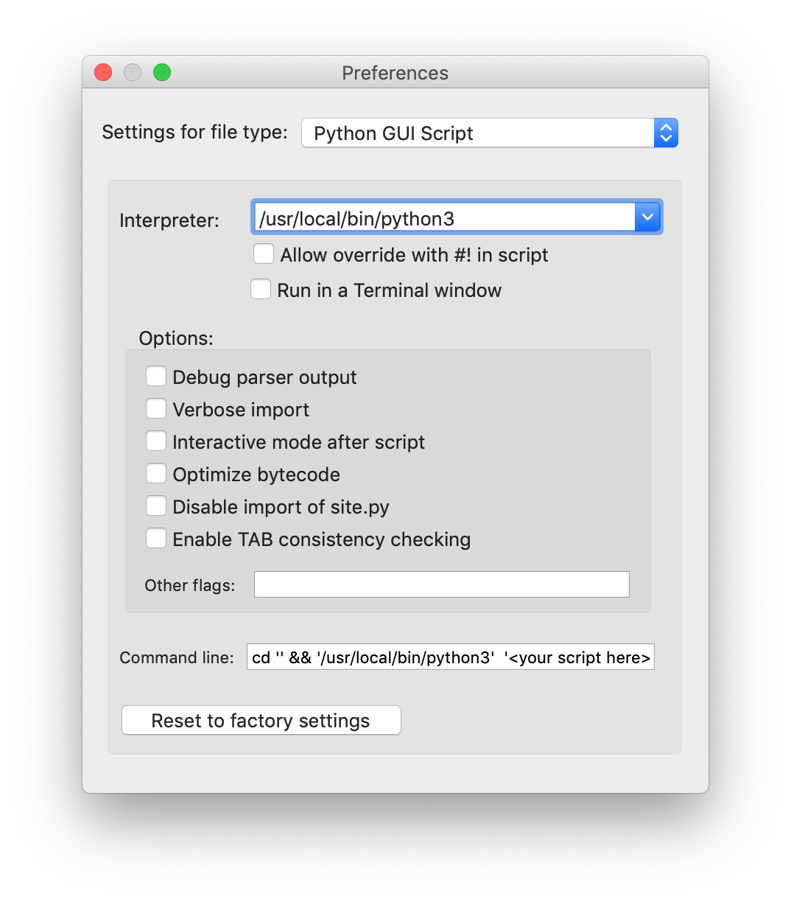
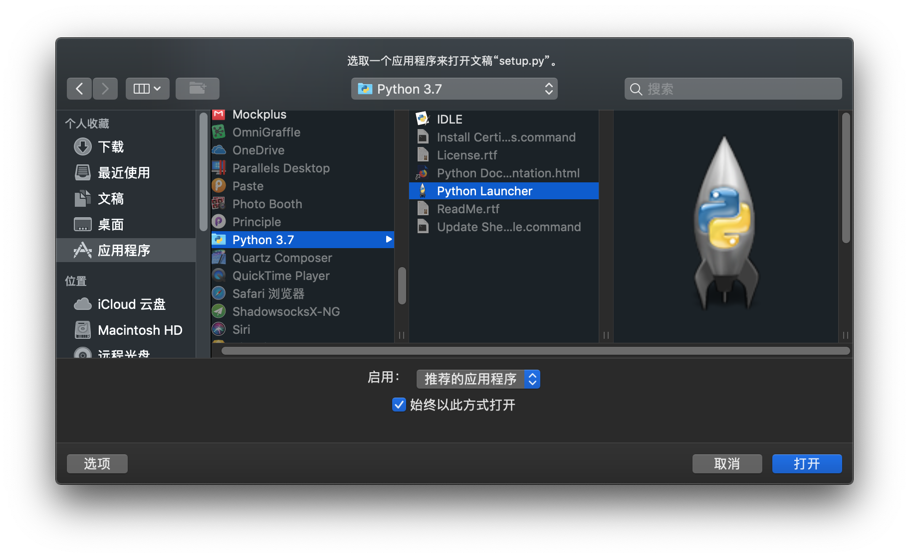
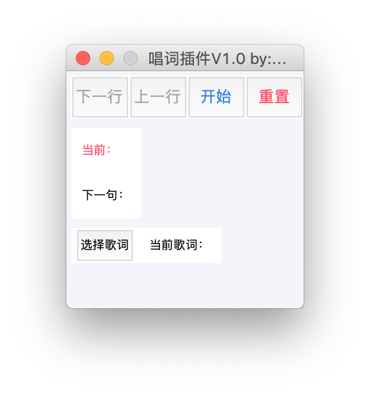

环境配置
下载插件
安装配置Python
插件基于python3，需要现在运行的mac上安装pyhton3环境。
选择Stable Releases下的最新版本
Download macOS 64-bit installer
更多环境配置参考以下教程
配置Python启动器
安装完成后，打开Launchpad，打开Python Launcher。在默认弹出的Preferences窗口中将Python Script和Pyhton GUI Script均按下图设置。

设置启动方式
找到插件文件夹下 /mimoScript/setup.py，右键→打开方式→其他，选择应用程序→Python 3.7→Python Launcher，勾选"始终以此方式打开"，点击确认。

至此，弹出以下窗口，即代表插件正常运行
